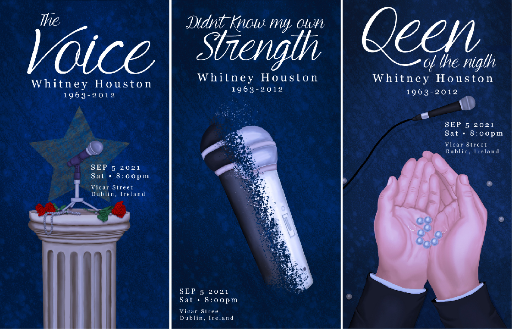
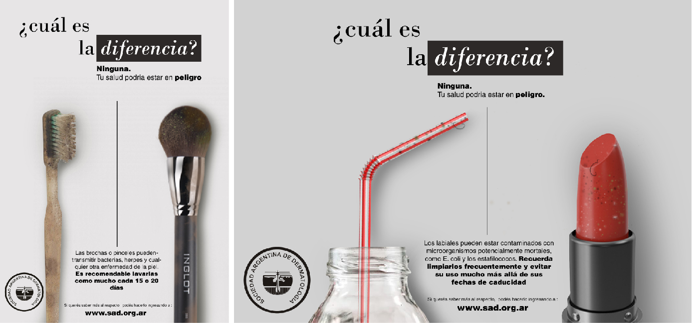
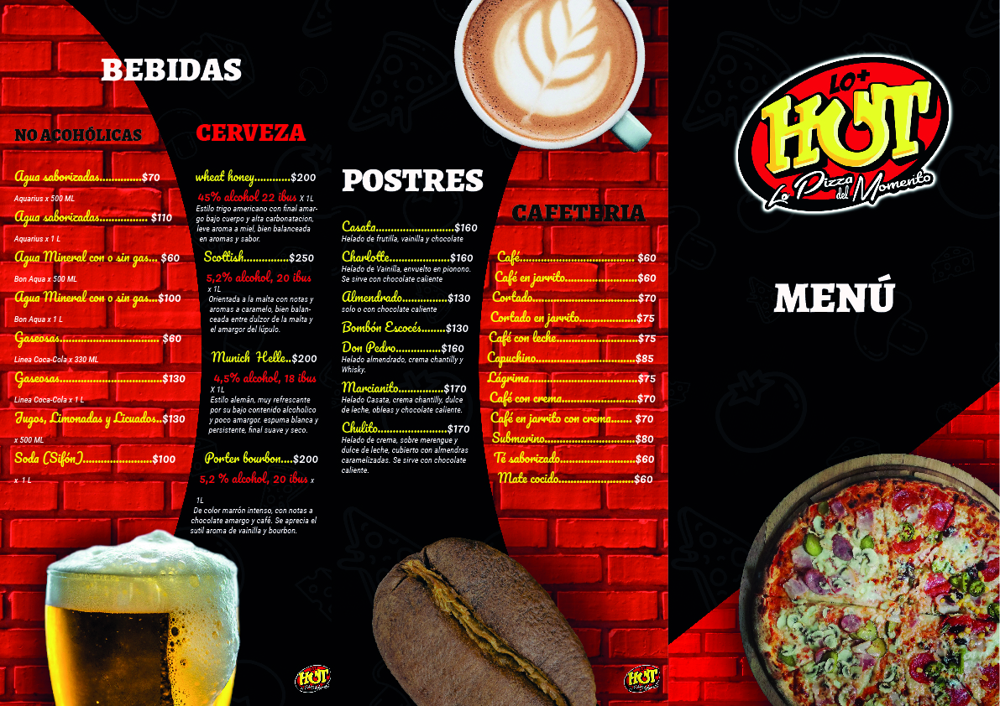
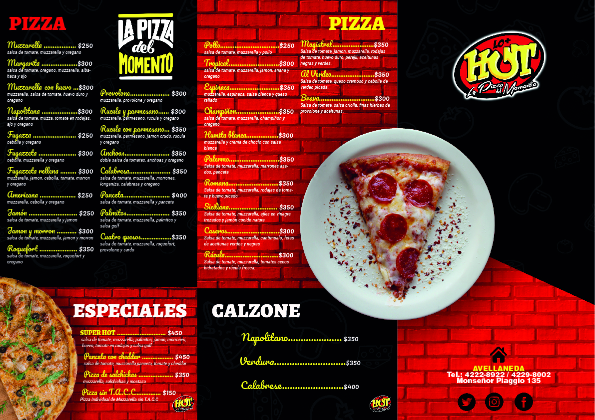

Trabajos de la facultad
Serie de pósters fotográficos

Herramientas utilizadas: Photoshop, cámara Nikon B500 coolpix.
Proyecto académico compuesto por tres pósters creados a partir de fotografías propias. El trabajo incluyó captura, edición y tratamiento de imagen, explorando la composición visual y la integración de la fotografía en un formato gráfico. Las imágenes fueron tomadas bajo la consigna de experimentar con diferentes tipos de iluminación.

Serie de pósters – Homenaje a Whitney Houston

Herramientas utilizadas: Photoshop.
Proyecto académico compuesto por tres pósters ilustrados para un evento ficticio conmemorativo en honor a Whitney Houston. El trabajo incluyó la creación de ilustraciones originales y la aplicación de recursos gráficos, explorando composición, tipografía y coherencia visual en un formato editorial.
Publicidad de concientización – Maquillaje vencido

Herramientas utilizadas: Photoshop.
Proyecto académico cuyo objetivo fue diseñar una pieza publicitaria para generar conciencia. El tema elegido fue el riesgo de utilizar productos de maquillaje en mal estado, destacando la importancia del cuidado personal y la prevención de problemas de salud a través de la comunicación visual.
Rediseño de menú de pizzería


Herramientas utilizadas: Photoshop, Illustrator.
Proyecto académico y uno de mis primeros trabajos de rediseño, basado en el menú de una pizzería existente. El trabajo consistió en reorganizar la información, aplicar una nueva jerarquía visual y renovar el estilo gráfico para mejorar la legibilidad y la presentación del producto.